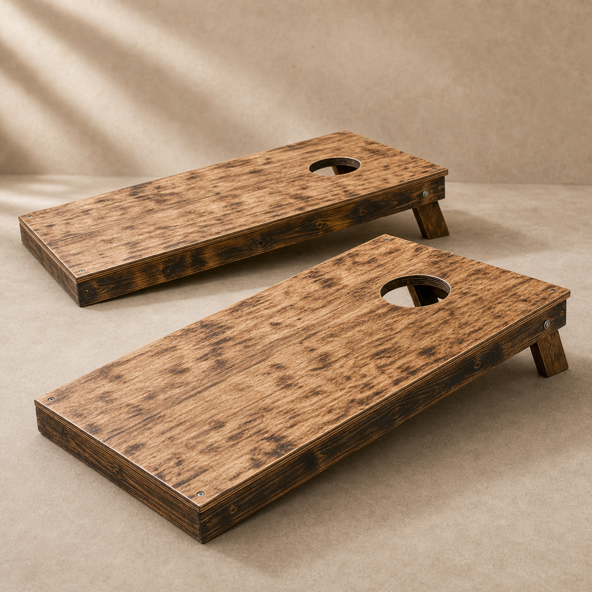
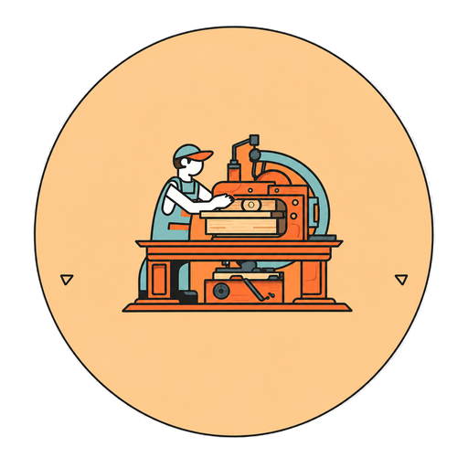
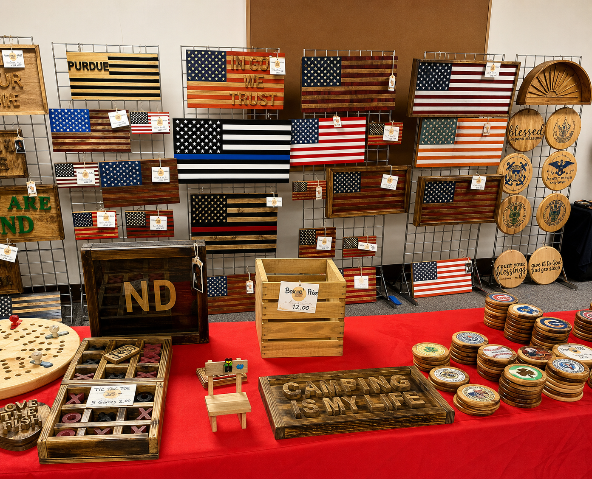
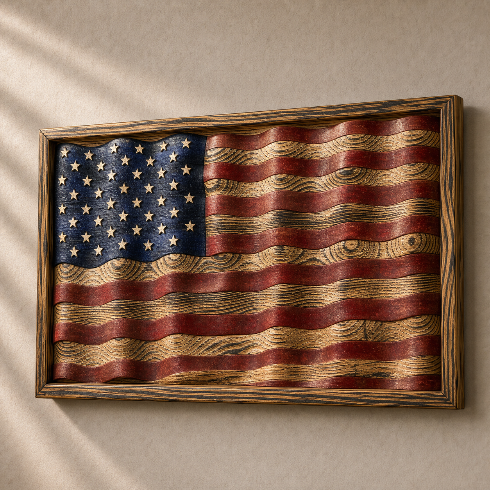
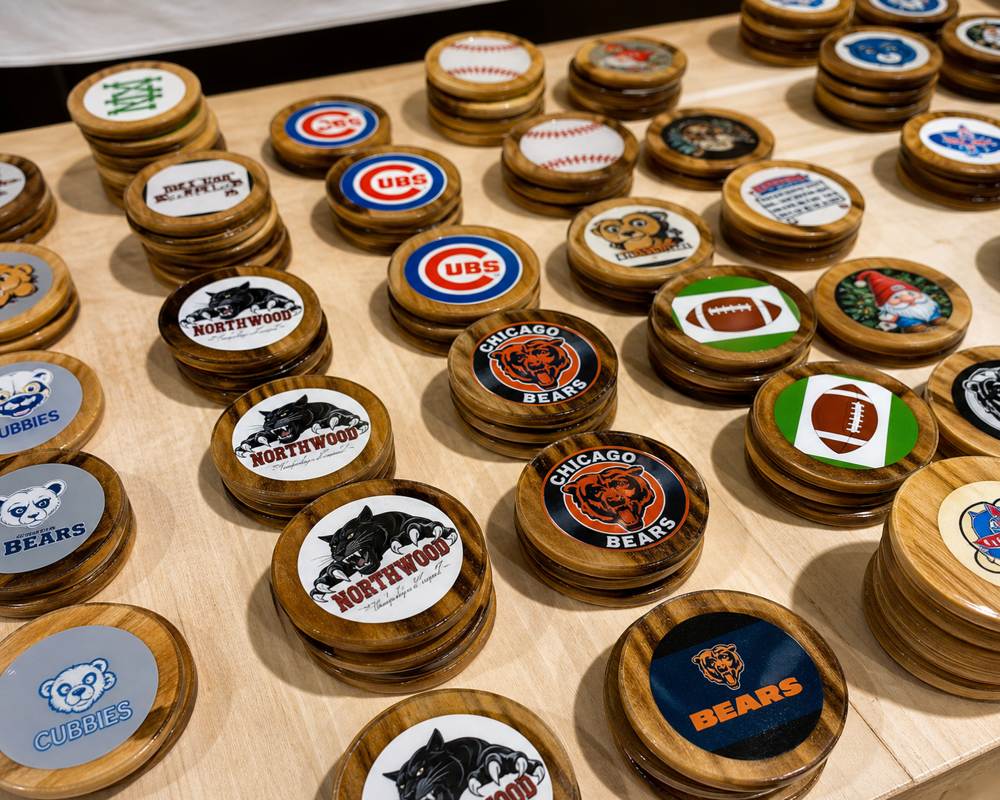
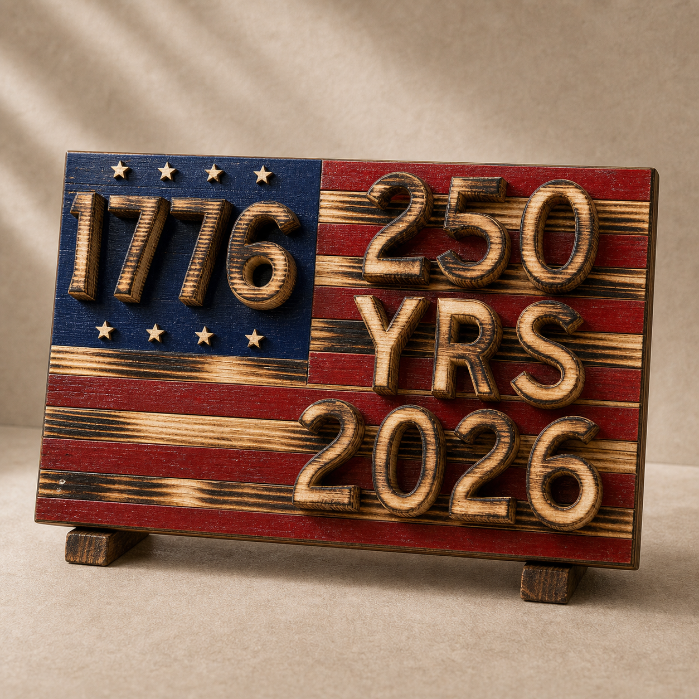
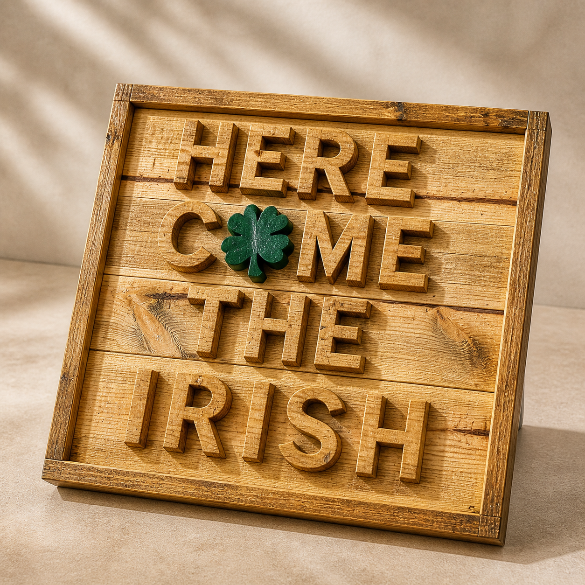
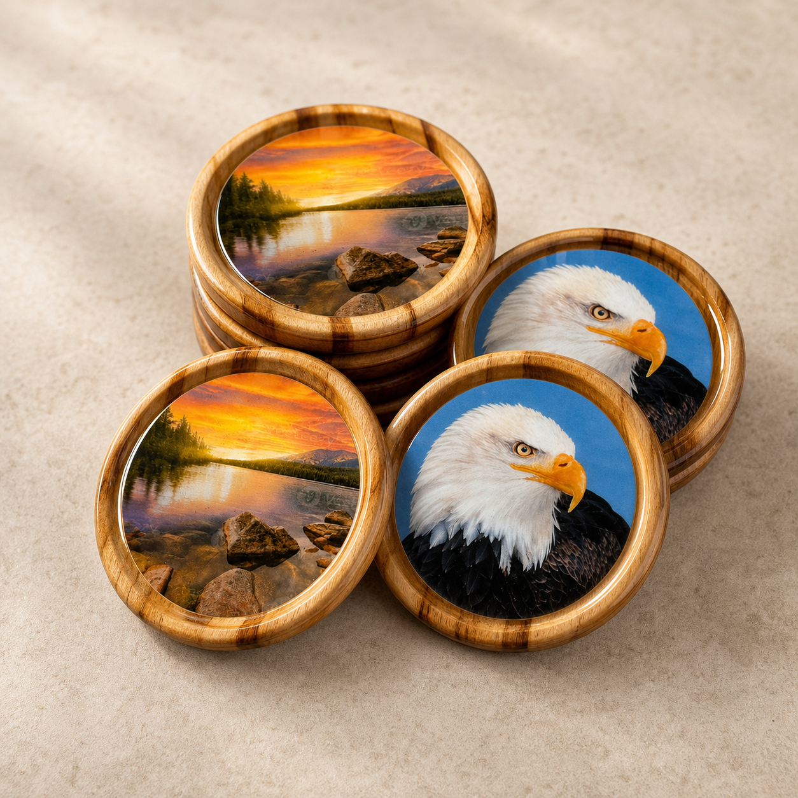
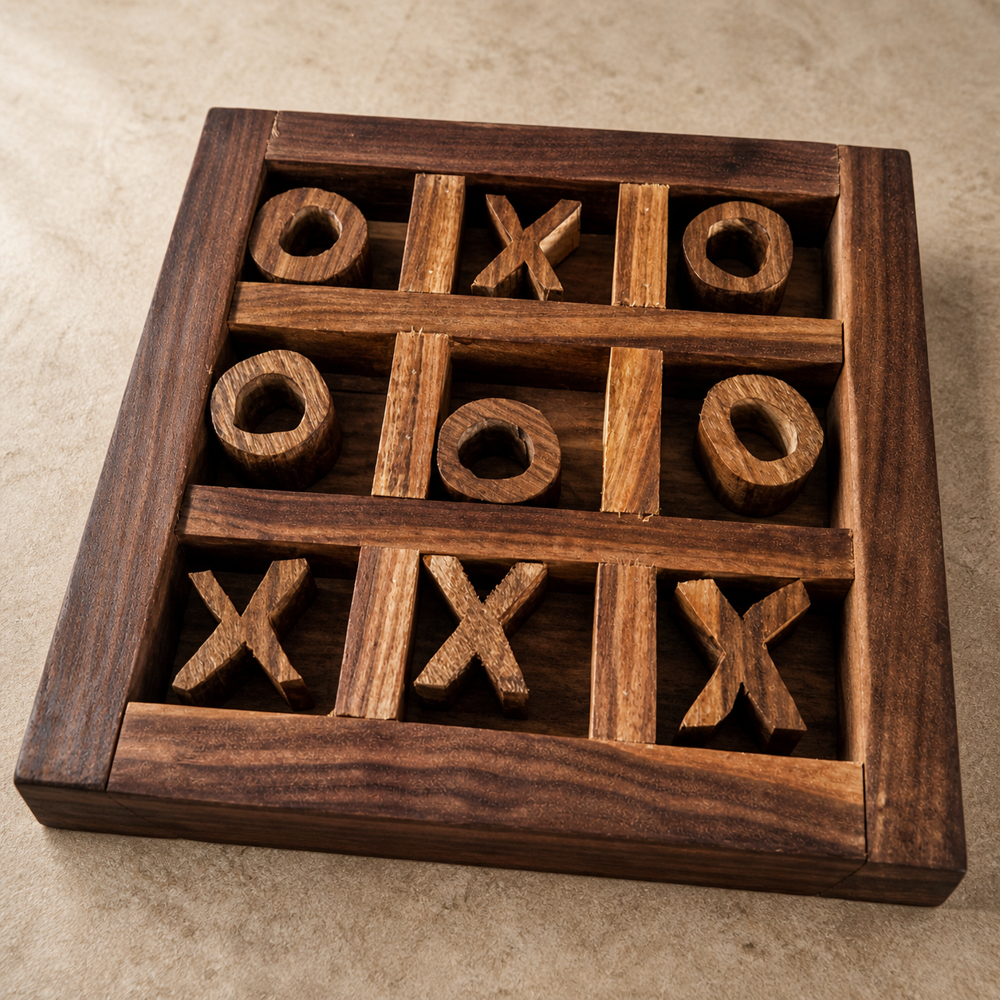
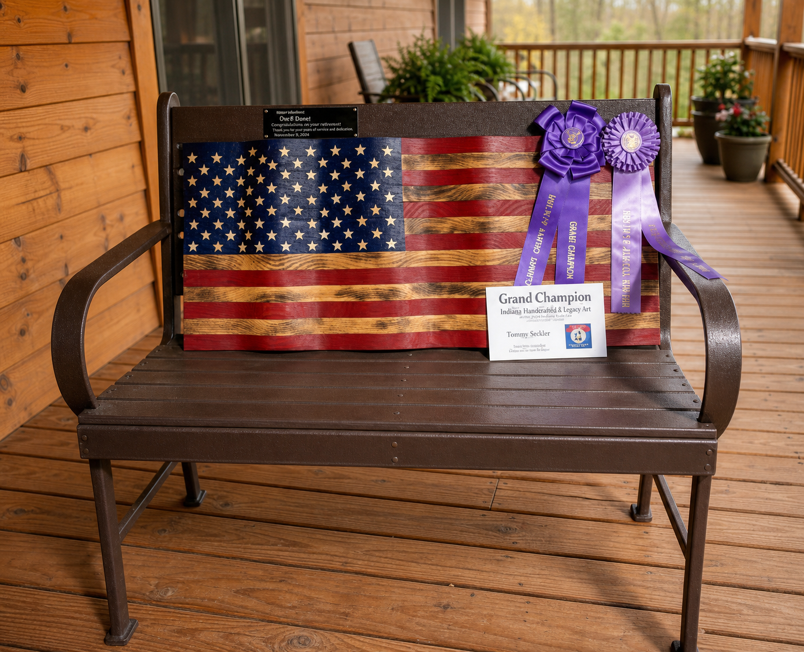

Cornhole Boards
Sturdy boards for tailgates, cookouts, church events, and backyard games.

Papa's WoodworkingHandmade woodcraft from Northern Indiana
Papa's Woodworking makes American flags, team coasters, signs, games, and gifts with a warm handmade finish. Find Tommy Sarber at Northern Indiana craft shows, or reach out with a custom idea.



Samples of his work
Tommy is best known for wooden American flags of all sizes and round coasters featuring high school, college, and professional sports teams. His table also fills up with signs, games, and giftable pieces made for porches, family rooms, offices, and fans.

Sturdy boards for tailgates, cookouts, church events, and backyard games.
Signature wooden flags in porch, wall, and statement-piece sizes.

Patriotic pieces for holidays, anniversaries, fairs, and family spaces.

Local school, college, and pro-team designs for fans and gift buyers.

Popular round wooden coaster sets for sports fans, graduates, and offices.

Small handmade games that make easy gifts and good coffee-table pieces.
Craft shows and festivals
At a Northern Indiana craft show, Papa's Woodworking is the kind of booth people slow down for: rows of handmade flags, stacks of team coasters, small games, carved signs, and gift pieces spread across the table.
Tommy's work has won awards at the Elkhart County Fair, and his booth has become familiar to locals across the area. Many customers buy something ready-made, while others start a custom order after seeing a finish, size, or team design in person.

Meet Papa
Tommy Sarber is retired from secular work and still pastors a small church. He is also a husband, father, grandfather, and great-grandfather, which is where the name Papa's Woodworking comes from.
Woodworking began as a retirement hobby, then grew into a craft-show table full of flags, coasters, signs, games, and custom pieces. Tommy keeps the work plainspoken and personal: good wood, careful finishing, and pieces made for real homes, teams, families, and gifts.
Custom orders
Custom orders do not need to start with a perfect plan. Tell Tommy what you have in mind, what caught your eye at a show, or who the piece is for, and he can help sort out the size, finish, colors, and details.